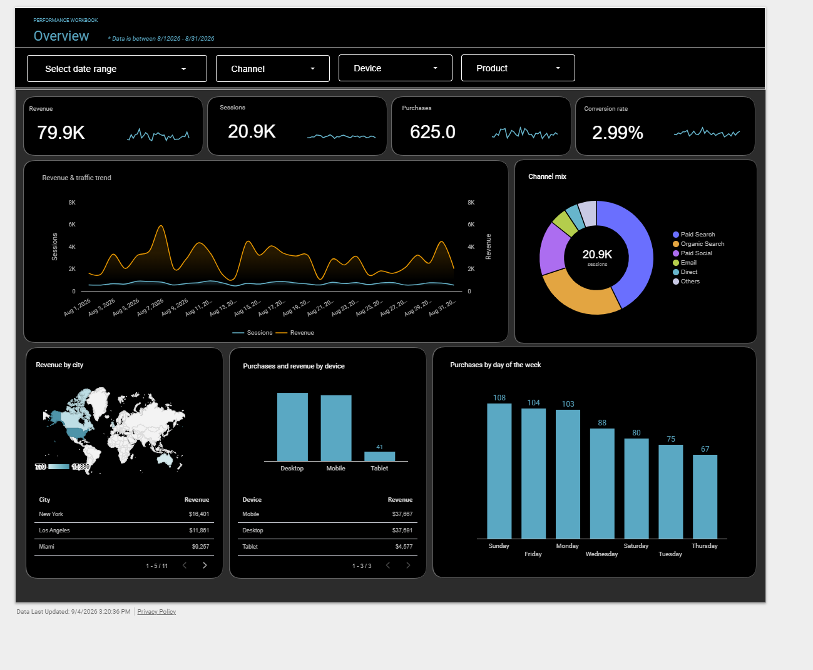
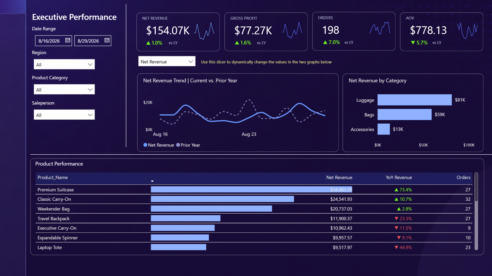
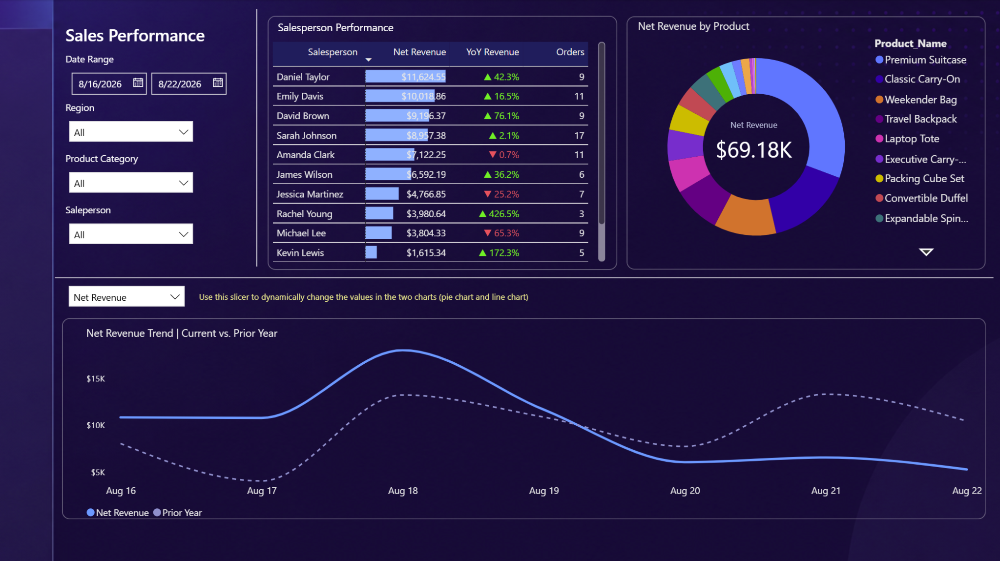

Digital Analytics & Business Intelligence
From data collection to business insight.
I help businesses connect, organize, analyze, and visualize marketing and performance data so teams can understand what is working and make better decisions.
10+ years in digital analytics
Director-level leadership
MBA, Finance & Marketing
Full analytics workflow
01
CollectTracking & measurement
02
ConnectData integration
03
AnalyzePerformance & insights
04
VisualizeDashboards & reporting
About
Analytics should reduce uncertainty, not add complexity.
I am a digital analytics leader with experience spanning business intelligence, marketing measurement, reporting automation, data transformation, attribution, audience analysis, and performance optimization.
My work has included building analytics strategies for clients, creating and leading business intelligence capabilities, automating reporting workflows, and translating complex data into clear recommendations for both technical and non-technical stakeholders.
How I Help
Build a clearer view of your business.
From tracking and data integration to dashboards and performance analysis, I help teams make their data more useful.
Business Intelligence & Dashboards
Create intuitive, interactive reporting that gives teams and leaders a clear view of performance.
Power BILookerKPI Design
Marketing Analytics
Understand the channels, campaigns, audiences, and behaviors contributing to business results.
Paid MediaAttributionOptimization
Data Integration & Automation
Connect fragmented sources, transform data, and reduce manual reporting with scalable workflows.
AlteryxBigQuerySupermetrics
Tracking & Measurement
Build more reliable measurement foundations for site behavior, conversions, campaigns, and testing.
GA4Google Tag ManagerA/B Testing
Featured Work
Interactive analytics built for decision-making.
Two examples showing different sides of the analytics workflow: digital marketing performance and executive sales intelligence.
01 / Looker Studio
Digital Marketing Performance Dashboard
The challenge
Marketing performance data can be difficult to interpret when revenue, traffic, conversion, channel, device, and geography are viewed separately.
The solution
A centralized, interactive dashboard that brings key performance metrics together and lets users explore results by date, channel, device, and product.
What it answers
How revenue and traffic are trending, which channels drive sessions, where customers convert, and which markets and devices contribute most.

Explore It
Use the live dashboard
For the best interactive experience on a small screen, use “Open full screen.”
02 / Microsoft Power BI
Executive Sales Performance Dashboard
The challenge
Leadership needs a fast way to understand revenue, profitability, orders, product performance, and sales-team results without losing the ability to drill into the drivers.
The solution
A multi-page Power BI report that combines executive KPIs with product, category, regional, salesperson, and prior-year comparisons through interactive slicers and visuals.
What it answers
How the business is performing, where growth or declines are occurring, which products and categories drive results, and which salespeople are contributing most.


See It Work
Watch the dashboard in action
The walkthrough shows the interactive filters, KPI switching, responsive visuals, and navigation across report views.
Capabilities demonstrated
Power BIData ModelingInteractive SlicersKPI DevelopmentYoY AnalysisExecutive Reporting
Experience
A decade of turning marketing data into business decisions.
Analytics leadership across agency, client strategy, reporting automation, measurement, and business intelligence.
2022 — Present
WMX
Director of Analytics
2020 — 2021
Tinuiti
Associate Director, Insights & Analytics
2016 — 2020
WMX
Digital Analytics Manager → Director of Analytics
2014 — 2016
Zimmerman Advertising
Digital Analyst
EducationMBA, Finance & MarketingUniversity of Miami School of Business
EducationB.A., EconomicsUniversity of Colorado Boulder
Tools & Capabilities
Technology is part of the solution — not the whole story.
Visualization & BI
Power BI · Looker
Data & Automation
Alteryx · BigQuery · Supermetrics · Advanced Excel
Measurement & Tracking
GA4 · Adobe Analytics · Google Tag Manager
Marketing Analytics
Paid Search · Paid Social · Display · SEO · Attribution · A/B Testing
Let’s Connect
Have data, but not enough clarity?
Let’s talk about how better measurement, reporting, and analytics can help your team make faster, more informed decisions.